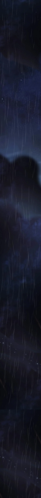
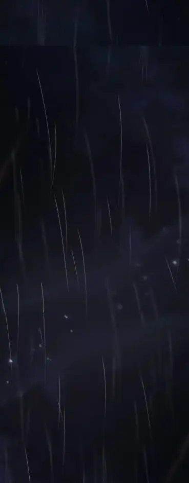
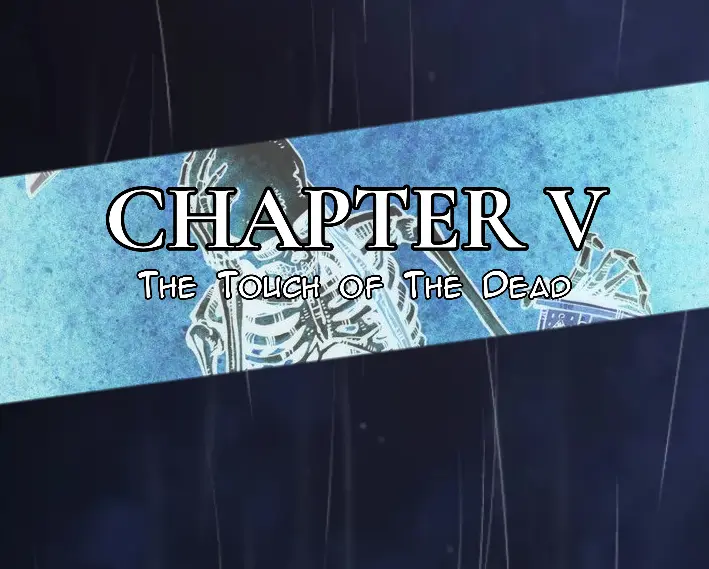
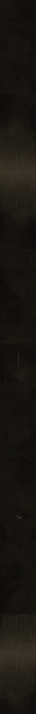
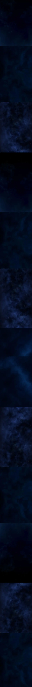

It was a dark, rainy night in Western Ravenport.
Far beyond the streets, houses, and quiet neighborhoods of the western district, the mountains rose into the darkness like enormous walls surrounding the edge of the city. The area was known mostly for camping trails and hiking routes during the day. At night, however, the mountains became an entirely different place.
There were no streetlights here.
No houses.
No traffic.
Just narrow roads disappearing between trees, mountains, and stretches of forest that looked even darker whenever lightning flashed across the sky.
A black car was making its way up one of those roads.
Inside were five men.
They weren't hikers.
They weren't campers.
They weren't lost.
They were grave robbers.
The driver kept both hands on the steering wheel as the windshield wipers struggled against the heavy rain.
"The grave is said to be closer to Mount Twin," he said, keeping his eyes on the road. "There's a sanctuary there for it."
Nobody immediately answered.
Thunder rolled somewhere beyond the mountains.
The driver glanced toward the passenger seat before looking back at the road.
"We're not the first ones to attempt this, either. A lot of people have tried."
He paused.
"No one has ever seen them again."
The man sitting beside him slowly turned his head.
"Do you really wanna do this, Travis?"
Travis Dell Deyvon stared through the windshield.
He didn't look particularly concerned.
"At this point in my life," Travis said seriously, "I'd even drag a shark out of the ocean and cut its penis off if it was worth five million crowns."
For a moment, there was silence.
Then the men sitting in the back burst out laughing.
Travis didn't.
He simply continued staring ahead with the same serious expression.
The driver shook his head.
"You're fucked."
"Five million crowns."
"Yeah, I heard you."
"That's a lot of money."
"It really is."
The car continued up the mountain road.
Eventually, a large metal gate appeared through the rain.
The driver slowed down.
The headlights illuminated a rusty sign hanging from the gate.
NO TRESPASSING.
Below it, someone had added another warning in smaller letters, though most of it had been ruined by years of rain and weather.
The car came to a stop.
"Well," the driver said.
Everyone looked toward the gate.
"This is probably where we die."
One of the men in the back opened his door.
"Don't say that."
"I'm just being realistic."
Two of the men climbed out into the rain.
They walked toward the gate, boots sinking slightly into the muddy ground. One of them pulled out a pair of heavy cutters while the other kept watch.
The chain wrapped around the gate was thick.
It took several attempts before the cutter finally bit through it.
CLACK.
The chain fell into the mud.
The gate creaked open.
The two men hurried back to the car.
They climbed inside, soaking the seats with rainwater.
"Go."
The driver didn't need to be told twice.
He pressed the accelerator.
The car rolled through the gate and deeper into the mountains.
The gate slowly swung back behind them.
Nobody bothered to close it.
The road became worse the farther they went.
Mud covered most of the path, forcing the driver to slow down whenever the tires slipped. Trees crowded both sides of the road, their wet branches scraping against the windows.
Every few seconds, lightning illuminated the forest.
For a split second, the mountains became visible through the trees.
Then darkness swallowed everything again.
Thomas, one of the men sitting in the back, leaned forward between the seats.
"I'm hoping there's gold in this shit-ass coffin we're about to dig out."
Travis looked at him.
"Gold?"
"Five million crowns doesn't sound like five million crowns unless there's something valuable in that grave."
"Could be jewelry."
"Could be gold."
"Could be nothing."
Thomas leaned back.
"Don't ruin this for me."
The driver laughed quietly.
Another flash of lightning illuminated the road ahead.
For a brief moment, they could see something standing between the trees.
A wooden structure.
Old.
Tall.
Almost like a small shrine.
Then the lightning disappeared.
The forest returned to darkness.
"Was that it?" one of the men asked.
The driver slowed down.
"I think so."
The car continued forward.
None of them noticed that the moment they passed the shrine, the rain suddenly became heavier.
And somewhere beyond the trees, hidden deep within the mountains, something watched them enter.
"It's been a while since we found those."
Fletcher looked toward Travis.
"Hey, Dell. You sure this intel is telling the truth?"
Travis didn't even look at him.
"I'm sure as nice titties in a frying pan, pal. Otherwise, why would I be here?"
Thomas stared at him from the back seat.
"Is he on cocaine?"
"I'm not on cocaine."
Travis turned around slightly.
"I'm on car seat, numbskull."
Thomas frowned.
"What the fuck does that even—"
The driver suddenly slammed on the brakes.
The car came to a stop.
Travis lurched forward, nearly smashing his face against the dashboard.
"Motherfucker!"
He grabbed his face.
"You almost killed me!"
"I remember telling you to put on your seat belt."
The driver opened his door and stepped out.
The others followed.
Travis remained in his seat for a moment, rubbing his face before finally opening the door.
Outside, the ground wasn't as muddy as the road they'd driven through, though the constant rain had already turned parts of it into wet, slippery earth.
Rain poured heavily around them.
The car's headlights cut through the darkness, illuminating the trees and the ground ahead.
And then the light fell directly onto something.
A tombstone.
Fletcher and Thomas had already started walking toward it.
Travis, however, went in the opposite direction.
He walked around to the back of the car.
He opened the trunk.
Inside was a man wearing a suit.
He appeared to be unconscious.
Travis leaned into the trunk and tapped his cheek.
"Hey. Hey, hey, hey."
The man groaned.
"Jason."
Jason coughed and slowly opened his eyes.
"What the fuck is wrong with you?"
He tried to move his head.
"I might've vomited on your face."
Travis smiled.
"And I might've swallowed it. This hunger has to stop somehow."
Jason stared at him in disgust.
"Ew, man. Stop doing drugs."
Travis ignored him.
Jason slowly blinked.
Then he looked around.
It took him a few seconds to understand what he was seeing.
Darkness.
Rain.
The inside of a car trunk.
He looked down.
He wasn't wearing his suit trousers anymore.
He was wearing shorts.
His expression changed.
"Wait..."
He looked back at Travis.
"Where the hell am I?"
Travis leaned against the edge of the trunk.
"Don't panic."
Jason stared at him.
"You kidnapped me."
"You didn't want to help out."
Travis shrugged.
"So I helped you make the right decision."
Jason's eyes widened.
"What?"
"Since you're already here, pal..."
Travis gestured toward the others, who were now gathered around the tombstone.
"...you might as well help us."
Jason stared at him in disbelief.
Rainwater ran down his face as he slowly realized that whatever Travis had brought him here for, he wasn't getting back into civilization anytime soon.
Jason stared at Travis for a moment, then smiled bitterly.
"I have no fucking words to say."
He climbed out of the trunk, and Travis helped pull him the rest of the way out.
"That's right," Travis said, grinning. "We're going to make some money."
Jason brushed himself off.
"I'm getting twenty percent of your cut."
Travis paused.
"Twenty?"
"Twenty."
Travis stared at him for a moment before shrugging.
"Fine."
He reached back into the trunk and pulled out a large bag.
The moment he dropped it onto the ground, the sound of metal clashing against metal came from inside.
The other three men turned toward them.
Travis picked up the bag and, with Jason following beside him, walked toward the tombstone.
The others were already gathered around it, examining the stone through the heavy rain.
Travis stopped beside them.
"Alright, guys."
He threw the bag onto the ground.
"Get my shovels. We're going to dig this little mummy out of its resting place."
The bag landed with another loud clang.
Jason crouched down and unzipped it.
Inside were several shovels and other digging equipment.
He pulled out the first shovel and tossed it toward Thomas.
Thomas caught it.
Jason grabbed another.
Fletcher.
Another.
Then he handed the last one to the driver.
"Alan."
Alan took the shovel and looked at the tombstone.
The four men stood around the grave.
Jason remained a few steps behind them.
Thomas looked down at the stone.
Something about it bothered him.
"I was never told about a tombstone with no name on it, Travis."
Travis looked at him.
"But you were told about the money, little kitty."
Thomas frowned.
"Don't call me that."
Travis licked his lips and pointed toward the grave.
"The money is waiting."
He gave Thomas a little shove toward the others.
"Mummy is waiting."
Thomas stumbled forward.
"Go dig."
They dug.
And dug.
And dug.
For hours, the five men worked beneath the pouring rain, their clothes becoming heavier with every passing minute. Mud covered their shoes, their trousers, and the lower parts of their jackets.
Nobody talked much anymore.
The excitement of the money had slowly been replaced by exhaustion.
Then Alan's shovel struck something.
CLANG.
Everyone stopped.
Alan looked down.
He moved the dirt away with his hands.
Wood.
"Hey, Travis."
Travis looked over.
"Get some lights from the car."
Travis nodded and climbed out of the grave.
A few minutes later, he returned carrying a large flashlight—the kind commonly used by miners in Northern Ravenport.
He switched it on.
A powerful beam cut through the darkness.
The light revealed the object buried beneath them.
A coffin.
They had finally found it.
Jason crouched beside it and knocked his knuckles against the lid.
Knock. Knock.
He listened.
"This sounds solid."
Thomas looked at him.
"That might be a good sign."
Jason didn't answer.
He moved the flashlight closer and began examining the coffin.
There were carvings covering the wood.
Strange symbols.
Patterns.
Lines that seemed to form some kind of design.
Jason ran his fingers carefully over one of them.
"This coffin isn't just something you find in any cemetery."
Alan crouched beside him.
He studied the carvings too.
After a moment, his expression changed.
"Looks unique."
Fletcher stood a short distance away, smoking a cigarette.
Rain poured down around him.
Jason glanced at him.
Then at the cigarette.
Then back at him.
The cigarette was still burning.
Jason stared for a moment.
*How the fuck is that thing not going out?*
Fletcher took another drag.
"Let's get this shit out."
He looked down at the coffin.
"The night's getting old, people."
He tossed the cigarette into the mud beside him.
It immediately disappeared beneath the rain.
Nobody said anything.
They simply looked back at the coffin.
"I agree," Jason said.
They went back to work.
The men dug deeper around the coffin, clearing enough earth from its sides so they could pull it out without damaging it.
By the time they were finished, the rain had soaked everyone completely.
Travis climbed down into the grave and helped lower the chains around the coffin.
They wrapped them tightly around it, securing them underneath so they could pull it out.
"Everyone ready?"
The others grabbed the chains.
"Pull!"
They strained against the weight.
The coffin slowly moved.
A few inches.
Then a few more.
Mud slid away from underneath it as they continued pulling.
It took several attempts, but eventually the coffin was dragged completely out of the grave.
For a moment, nobody said anything.
They simply stood around it, breathing heavily.
Hours of digging.
Hours of rain.
And now they had a coffin sitting in the middle of the mountains.
Thomas looked around.
"What are we waiting for?"
Fletcher stood nearby, smoking another cigarette.
"We're waiting for that asshole Jayden to show up."
He took another drag.
"But I can already tell you this—he's probably drunk."
Thomas looked at him.
"Jayden? Travis's cousin?"
"Yeah. Him."
A few seconds later, headlights appeared in the distance.
At first, nobody paid much attention.
Then the lights grew brighter.
And brighter.

The sound of an engine grew louder.
Thomas turned around.
"Is he supposed to be coming this fast?"
Fletcher dropped his cigarette.
"Oh, fuck."
A vehicle came tearing down the muddy path toward them.
Jayden was behind the wheel.
He wasn't slowing down.
"JAYDEN!"
The vehicle swerved through the mud.
Straight toward the grave.
"STOP THE DAMN CAR!"
Jayden kept coming.
Fletcher pulled out his gun.
BANG!
The warning shot cracked through the mountains.
Jayden slammed on the brakes.
The vehicle skidded sideways, stopping only a few feet from the freshly dug grave.
Everyone stood frozen.
Fletcher marched toward the driver's door.
"That's my dad's girlfriend, you punk!"
Jayden stared at him through the windshield.
"What?"
Fletcher yanked the door open.
"Get the fuck out."
Jayden slowly stepped out.
Fletcher immediately slapped the back of his head.
"Are you trying to kill us?"
"Ow!"
"You almost drove straight into the grave!"
"I thought the road continued!"
"The road is a fucking grave now?!"
Jayden rubbed the back of his head.
"Okay, okay. I'm sorry."
Fletcher shook his head.
"Idiot."
The others began preparing the coffin.
Jayden walked around to the back of the vehicle and opened the doors.
Together, they began lifting the coffin.
"Careful," Alan said.
"Yeah, yeah," Jayden replied.
They struggled with the weight before finally getting it inside.
Once the coffin was secured, Jayden shut the doors.
Travis climbed into the vehicle.
Alan pointed at Jayden.
"Don't you dare crash this car."
Jayden looked at him.
"I won't."
Fletcher walked toward the passenger side.
"I'm going with Jayden."
Thomas looked at him.
"Why?"
Fletcher opened the door.
"Because apparently I'm the only thing standing between that asshole and a fucking tree."
Jayden frowned.
"I'm not that bad of a driver."
Fletcher climbed inside.
"You nearly buried us before we even got the coffin out."

Jayden started the engine.
"That was one time."
Fletcher stared at him.
"Drive."
The vehicles started moving.
This time, much slower.
Two cars left the burial site, disappearing into the rain as they descended from the mountains.

In Bella's Room
Bella was asleep.
Outside her window, the wind moved violently through the trees as another thunderstorm passed over Western Ravenport.
Rain struck the glass in steady waves.
Tap.
Tap.
Tap.
Every now and then, lightning flashed across the room, briefly illuminating the walls before leaving everything in darkness again.
Bella shifted beneath her blanket.
She turned onto her side.
Then onto her back.
The blanket slowly slipped from the bed and fell onto the floor.
Bella didn't wake up.
A cold breeze entered through the slightly opened window.
She shivered.
Her body curled inward as the cold slowly crept across her skin.
She hugged her pillow tightly against her chest, trying to find warmth in it.
Another shiver.
Her breathing became slightly uneven.
Then...
The blanket moved.
Not because of the wind.
It lifted from the floor.
Slowly.
Quietly.
As if an invisible pair of hands had picked it up.
The blanket hovered for a moment.
Then it was placed back over Bella.
Perfectly.
The cold disappeared.
Bella's body relaxed.
Her breathing became steady again.
She continued sleeping.
A strand of her hair had fallen across her face.
It slowly moved.
Bella didn't react.
The strand was lifted away from her mouth and gently placed beside her cheek.
Then something touched her face.
A hand.
Or something that felt like one.
It brushed her cheek.
Softly.
Carefully.
Almost affectionately.
Bella remained asleep.
The unseen presence stayed beside her bed.
For a moment, nothing happened.
Then it leaned closer.
Something touched her forehead.
A kiss.
Gentle.
Almost parental.
The presence remained there for another few seconds.
Watching her sleep.
Another flash of lightning illuminated the room.
For the briefest instant, the shadows on the walls shifted.
But there was nothing standing beside the bed.
Nothing reflected in the window.
Nothing beneath the bed.
Nothing visible anywhere in the room.
Only Bella.
Sleeping peacefully beneath her blanket.
The rain continued outside.
The wind continued blowing.
And whatever had come into her room quietly disappeared.
Bella never woke up.
She never knew that she had not been alone.
The Next Morning
When Bella woke up, the rain had already stopped.
The storm from the previous night had disappeared, leaving Western Ravenport strangely peaceful. Outside, people were already moving around. Some were tending to their gardens, while others were simply going about their morning routines as if the storm had never happened.
Bella opened her bedroom door.
She was still wearing her pajamas.
She scratched at one of the itchy spots on her arm as she stepped into the hallway, still half-asleep.
Then she noticed Beth walking past.
Beth was carrying a doll.
Bella stopped.
She stared at it suspiciously.
"Morning, Bella," Beth said cheerfully, hugging the doll against her chest.
"Morning, sis."
Bella yawned.
"What's with the new doll?"
Beth looked down at the doll.
"Oh, Bear is my husband now."
Bella stared at her.
"Forever."
There was a brief silence.
"Um..."
Bella looked at the doll.
Then at Beth.
"That's more creepy than when you're having remote issues."
Beth giggled.
Bella shook her head and rubbed her eyes.
Beth continued down the hallway, still holding the doll tightly.
"I think I'm okay enough to go back to work now."
She took a few steps toward the stairs before stopping.
She looked down at Bear.
"Isn't that right, Bear?"
She waited.
As though the doll had said something.
A smile slowly appeared on her face.
"You're right."
Beth nodded seriously.
She continued walking down the stairs, still carrying the doll.
Bella remained in the doorway.
She watched her sister disappear down the staircase.
Then she quietly muttered to herself.
"Yeah..."
She scratched her arm again.
"...definitely creepy."
Bella walked into the bathroom, which was accessible from the hallway.
She did what she needed to do, washed her hands, and stepped back into the hallway.
She made her way downstairs and into the sitting room.
Bennett was standing near the hallway, watching television.
"Sup, Bella," he said without looking away from the screen.
Bella glanced at him.
"What's with the tattoos?"
Bennett finally looked at her.
"I'm part of the Black Templars, girl."
He smiled.
Bella raised an eyebrow.
"Isn't that the weird occult group that's supposed to be illegal and wanted by the police?"
Bennett's smile widened.
"Seems like you know them pretty well."
He tilted his head.
"You looking forward to joining?"
"No. I'm not."
Bella continued walking.
She took a few more steps before stopping.
Then she turned around.
"Did you make something to eat?"
Bennett looked back at the television.
"Nah."
A pause.
"Grandma did."
Bella nodded and turned toward the kitchen.
"Of course she did."
Bella continued toward the kitchen.
"Have you seen Mom?" she asked.
"Yeah," Bennett replied. "She left early this morning. Turns out she left the charger too."
Bella opened one of the kitchen drawers, looking through it.
"I don't need it anymore."
She closed the drawer and began preparing a quick bowl of cereal for breakfast.
As she poured the cereal into the bowl, something suddenly clicked in her mind.
"Oh..."
She stopped.
"Now I remember."
Bennett glanced toward her.
"Bear is Eljin's nickname."
Bella stood there for a moment, thinking about it.
Then she shook her head and continued making her breakfast.
Before she could say anything else, the front door opened.
Her grandmother walked inside.
She made her way toward the kitchen.
"Good morning, Grandma," Bella said.
She walked over and gave her a hug.
"Morning, little one."
Her grandmother smiled.
"If you're free, I'd love to have a talk with you."
Bella pulled away from the hug.
"Alright, Grandma. Let me finish eating first."
"Of course."
Her grandmother turned toward the sitting room.
"You'll find me out back."
She walked away, heading toward the backyard.
Bella watched her leave for a moment before turning back to her breakfast.
------------
Thirty minutes later, Bella had finished eating.
She brushed her teeth, changed out of her pajamas, and finally went outside to find her grandmother.
She found her sitting in the backyard, quietly reading a book.
Bella walked over and sat beside her.
"I'm here."
Her grandmother looked up from the book and smiled slightly before closing it.
Bella glanced at the cover.
Spirit Communication.
She looked at her grandmother.
"You've been reading that?"
Her grandmother simply held the book in her lap.
"I'm sure you've wondered at some point why everyone in our family has a name that starts with B."
Bella thought about it.
"I have."
She leaned back in her seat.
"But I've never gotten a proper answer."
"You will soon."
Grandma Beatrice looked toward the sky.
For a moment, she seemed distracted by something in the distance.
Bella watched her.
"Why are you looking up there?"
Beatrice didn't answer immediately.
Instead, she took a slow breath.
"Long ago, our family was cursed."
Bella's expression changed slightly.
"A curse?"
Beatrice nodded.
"Many of our family members never understood what the curse actually meant."
She looked back at Bella.
"Some didn't even know they were part of it."
The book remained closed in her lap.
Bella stared at her grandmother.
The Voice spoke again inside Bella's mind.
*Are you there?*
Bella ignored it.
Her attention remained on her grandmother.
Beatrice continued.
"Nobody understood how the curse worked, or even why it existed in the first place."
She lowered her voice.
"It began because of one member of our family."
Bella listened carefully.
"One of our ancestors tried to communicate with the dead."
Bella's expression tightened.
"The dead?"
Beatrice nodded.
"Yes."
The Voice interrupted again.
*Are you busy?*
Bella continued ignoring it.
She didn't even respond this time.
Beatrice continued speaking.
"After that, a vow was made within the family."
She paused.
"The sons would be taught our family history when they turned thirteen. By then, they would be considered old enough to become the men of the house."
Bella remained silent.
"And the daughters would be taught when they turned eighteen, when they were considered ready to become the ladies of the house."
Beatrice looked directly at Bella.
"And your time has come."
Bella stared at her grandmother.
"What?"
"In three days, your aunt will be here."
Beatrice placed the book beside her.
"You'll be taught many things. Some of them you may not understand at first."
She smiled faintly.
"But you'll have to bear with it."
Bella didn't respond.
"For our family's sake."
The words hung between them.
Bella looked at her grandmother.
Then toward the house.
Then back at Beatrice.
Three days.
Whatever had happened to their family all those years ago...
She was finally going to learn about it.

Bianca had arrived at the house in Cliffland Woods, deep within the mountains of Western Ravenport.
The house stood alone among the trees.
There were no neighboring houses.
No passing cars.
No voices.
Nothing but the mountains, the forest, and the occasional sound of wind moving through the trees.
The house looked empty.
Yet strangely, it was perfectly clean.
Bianca walked toward the front door.
She didn't knock.
She simply opened it and walked inside.
The door wasn't locked.
The lights were already on.
Somewhere inside the house, old music was playing.
It wasn't in English.
The unfamiliar language drifted through the halls, soft and distant, making the empty house feel even more unsettling.
Bianca closed the door behind her.
She stood there for a moment, listening.
Nothing.
She walked through the house until she reached a staircase leading down into the basement.
She descended.
Step by step.
The temperature dropped with every step.
By the time she reached the bottom, the air was cold enough to make her arms prickle.
There were no windows down here.
No source of natural light.
Only candles.
Dozens of them.
They were placed around the basement, their flames flickering gently despite there being no noticeable breeze.
In the center of the room was a table.
A table meant for two.
Two chairs sat on opposite sides.
One of them looked completely ordinary.
The other was anything but.
It looked ancient.
Its wooden frame was covered in strange writings and intricate carvings. Parts of it appeared almost golden beneath the candlelight, as though it had been carefully crafted for someone important.
Bianca walked toward the ordinary chair.
She sat down.
Across from her, the other chair remained empty.
Bianca stared at it.
For several seconds, she said nothing.
Then a candle sitting in the middle of the table suddenly lit itself.
Bianca didn't flinch.
"Do you truly think Becca is good enough to teach Bella?"
She looked directly at the empty chair.
Her voice echoed faintly through the basement.
"Because I don't think she will be."
She inhaled slowly.
Then exhaled.
The empty chair remained silent.
Bianca leaned forward.
"Actually, that bitch will fail."
She rubbed her forehead.
"And you'll see that I was telling the truth."
Silence.
The candles continued burning.
Bianca looked toward the empty chair again.
"I don't like Bella."
The flames flickered.
"You don't have to."
Bianca's eyes narrowed.
She had heard the voice.
It came from the empty chair.
Yet there was nobody sitting there.
"Whatever."
She leaned back.
"I'm better at this than Becca."
No response.
Bianca waited.
Nothing.
"I'll teach Bella myself."
A voice answered from across the table.
"Like you taught Blair?"
Bianca's expression changed.
For the first time, the confidence in her face disappeared.
She looked toward the chair.
"She was a mistake."
The room seemed to become colder.
"A child meant to be a sacrifice."
The words hung in the basement.
Bianca stood.
She pushed the chair back slightly.
"I'm hungry."
She looked at the empty chair one last time.
"I'll go make something to eat."
She turned and walked toward the stairs.
Behind her, the candle on the table continued burning.
Bianca climbed the stairs.
She disappeared into the darkness of the house.
The music upstairs continued playing.
The basement was silent again.
Except for the faint crackle of the candle flame.

Lucas walked around his apartment, scratching the back of his head while drinking milk straight from the bottle.
He was still half-awake.
He wandered toward the front door and opened it.
A girl was standing outside.
She was tall.
Very tall.
She had a gothic appearance, dressed almost entirely in black, with a quiet expression on her face.
Lucas had to tilt his head upward slightly just to look at her.
He took another sip of his milk.
"You're seven feet tall, huh?"
The girl looked down at him.
"Six-nine."
Lucas nodded.
"Close enough."
He continued drinking his milk.
"I was told you sell room information and people's information."
"Yeah."
Lucas leaned against the doorway.
"I happen to do so."
The girl studied him for a moment.
"Does that mean you know me?"
Lucas lowered the bottle.
"That information is confidential."
He paused.
"But..."
He looked her up and down.
"I can pay you to sit down with me for five hours and talk about everything involving you."
The girl stared at him.
Lucas stared back.
Neither said anything.
She seemed to actually consider the offer.
Lucas, meanwhile, looked down at her shoes.
*Those things seem big.*
He glanced at them again.
Very, very big.
The girl finally looked back at him.
"We can have that conversation next time."
Lucas raised an eyebrow.
"I'll remember that."
"I currently have to go to Timberland's party."
Lucas nodded.
"For a goth, you seem kind."
The girl shrugged.
"There's no reason for me to be rude when you're not being rude."
Lucas smiled.
"Ah."
He raised his milk bottle slightly.
"Do unto others as you'd like them to do unto you."
The girl nodded.
"Exactly."
Lucas reached into his pocket and pulled out his phone.
He unlocked it and scrolled through his contacts.
After finding the number he wanted, he put the phone against his ear.
It rang.
Once.
Twice.
Three times.
Lucas waited.
Then finally—
Someone picked up.
"What's up, Luc?"
It was Timberland.
There was a lot of noise in the background, with people talking and music playing loudly enough that Lucas could barely hear him.
"I just wanted to know which room you're at," Lucas said.
"We're in room 3431."
"Alright. Thanks."
Lucas ended the call.
He looked at Gwen.
"Five crowns."
Gwen handed him the money.
"Room 3431. Use the ninth gate to get there."
She listened carefully.
"The sixth gate might take longer to reach the three-thousand-numbered rooms."
Gwen nodded.
"Thanks."
She turned around and began walking away.
"Wait."
Gwen stopped and looked back.
Lucas leaned against the doorway.
"What's your name?"
"I'm Gwen."
She gave him a small wave before walking away.
Lucas watched her disappear down the hallway.
Then he closed the door.
He went back to the kitchen, opened the refrigerator, and scratched the back of his head.
His fingers passed through his hair.
He stopped.
Something felt different.
He looked at his hand.
He glanced toward the mirror.
A section of his hair seemed to have been cut off.
Lucas stared at it for a few seconds.
He didn't seem particularly concerned.
"Whatever."
He pulled another bottle of milk from the refrigerator and walked toward his room.
He was just about to enter when—
Knock. Knock.
Lucas stopped.
He turned around.
Another knock.
He walked back to the door and opened it.
A man stood outside.
Lucas looked at him.
Then his eyes narrowed slightly.
"Fisherman."
The man looked back at him.
"Lucas."
It was Damon Rask.
Lucas leaned against the door.
"What do you want here?"
"Here for a room."
Lucas stared at him.
"What room?"
Damon looked past him into the apartment.
"This apartment has five rooms."
He pointed toward the hallway.
"Two are occupied. I'll be the third student."
Lucas blinked.
"Student?"
"You?"
Damon nodded.
"Yeah."
He walked inside.
"Taking fishing classes."
Lucas watched him wander around the apartment.
Damon looked toward the kitchen.
"Oh."
He looked toward the sitting room.
"We have a kitchen and a sitting room."
He glanced down the hallway.
"And separate rooms."
"Yeah, we do."
Lucas scratched the back of his head again.
"I need to sleep."
He walked toward his room.
Damon continued looking around.
Lucas entered his bedroom, collapsed onto the bed, and pulled the blanket over himself.
Within seconds...
He was out.

Later That Night
Lucas woke up later that night.
The apartment was quiet.
He lay on his bed and spoke to Bella.
"Hey, are you awake?" Lucas asked.
"Yeah, I am," Bella replied.
"My love. My honey."
Bella smiled.
"You're making me smile like an idiot."
"Well, you're my idiot, then," Lucas replied.
"Oh my gosh," Bella said, laughing. "That sounds so cool. Sweet."
"I know, right?"
"You are my crush."
"Aww, that's sweet, love," Bella said. "You need to teach me how to flirt like this. Your sweet lines are on another level."
"It's simple," Lucas said. "Just express the shit in your heart and say what you want using your emotions."
"I do, but yours are like next level."
"Well, you could say I have a silver tongue."
"Share some with me through a kiss."
"Through a kiss?" Lucas replied. "You might end up getting more than just that."
"You don't hear me complaining."
Lucas smiled.
"You know, there's nothing more amazing than the feeling I get when I can tell you're alright, fine, and okay. It makes me feel good. I can tell you're fine, and that means a lot to me."
"Same, love," Bella said. "Though my mood is on two sides."
"Oh. I hope the good side wins."
Bella laughed.
"I hope so too. It's not bad, just... uh... out of the norm."
"Eh? You seem strangled, my love. What is it?"
"Unfortunately, I'm not just in a, umm... mood, I guess."
"You're being suspicious and vague as always," Lucas said. "So, um, mind spreading your legs wider so I can understand what's up?"
"Luuucc, what the fuck?"
"Yeah, you like it, right?" Lucas said. "So tell me, what's up?"
"Bruhhh, there's nothing up. Just my thoughts, love."
"Let's remember, I can smell suspicious acts, Bella."
He paused.
"And you're no different from a thief at a bank wearing a mask and saying they're just there to make a withdrawal."
"I know, I know."
"Mind elaborating and quit being a brat?"
"Well, love, I think I'll continue being a brat for a little longer."
"You're obviously trying to hide this shit happening here, and that's even more suspicious. Why would you want to hide it?"
"But, baby, I'm not."
"You know very well you can't convince me you're not, because I can feel it," Lucas said. "I mean, the feeling somehow tells me the truth."
"I know, I know."
Lucas paused for a moment.
"It's like back in 80 BC when that one king saw the sun being covered by the moon and decided the gods wanted them to sacrifice their kids. So he took every bastard kid and sacrificed them. Then the moon moved away from the sun and he was like, 'Yay, saved from the afternoon darkness.'"
Bella laughed.
"That's stupid."
"I know," Lucas said. "But this feeling is even more complicated, so let's get into it. What's up, Bella?"
Bella hesitated.
"I'm kinda..."
She stopped.
"Yeah, um... I can't tell you."
"Is there a reason?"
"Kinda not."
Bella sighed.
"Um, I guess I don't know how to say it."
"Yeah, I get it," Lucas said. "But why not tell me?"
"I can. It's not something worth even hiding. Just... uhm..."
Lucas waited.
"Oh, hmm. Question. Does this involve you and no one else? Like, only you? And it started earlier?"
"Yes. Just me and my thoughts."
Bella paused.
"And you."
There was another pause.
"Wait... it involves you."
"Okay," Lucas said. "I think I already know what it is."
"Okay."
"Oddly, I tried to think I was right, but then I said, 'Nope, it's not it.'"
He paused.
"Are you experiencing what we call horniness?"
Bella went quiet for a moment.
"Mhm. That."
Lucas laughed.
"It's odd how I already knew. I mean, isn't that fucking weird?"
"It is odd."
"How did you know, though?"
"How the fucking hell would I know you're horny?" Lucas said. "It's concerning."
"No way. Our little connection gives that information?"
"Well, it seems today it did."
"That's definitely new."
They continued talking late into the night.
Their conversation slowly became quieter as the hours passed.
Eventually, Bella's responses became slower.
Then quieter.
Until there was nothing.
Lucas waited.
"Bella?"
No response.
He waited a few more seconds.
She had fallen asleep.
Lucas remained awake for a while, staring at his phone before finally setting it down.
-----
A Night Walk
After his conversation with Bella, Lucas decided to go for a walk.

The university yard was almost completely empty at this hour.
Most of the buildings were dark, with only a few windows still glowing in the distance. The paths were quiet, and the air had that strange stillness that only seemed to exist late at night.
Lucas walked with his hands in his pockets.
For a while, he said nothing.
Then he looked up at the dark sky.
"What is life really about?"
He continued walking.
"When I think about it now, it's much more confusing than it should be."
He scratched the back of his head.
"I know the basic shit. You eat. You sleep. You survive. You find somewhere to stay."
He looked around the empty university yard.
"But then I think about it even more."
He stopped for a moment.
"We go to school to learn. We get knowledge so we can supposedly become useful to society. Then we go to work so we can make money."
He started walking again.
"And why do we need money?"
Lucas laughed quietly.
"To live in society."
He counted the things off on his fingers.
"Money gets you food. Money gets you a place to sleep. Money keeps you safe. Money keeps everything moving."
He lowered his hand.
"And then one day..."
He shrugged.
"You die."
Lucas walked in silence for several seconds.
"Where's the fun in that?"
He kicked a small stone from his path.
"It sounds normal when you say it out loud. Everyone does it. Everyone accepts it."
He looked toward the university buildings.
"But sometimes I think that's what makes it worse."
His expression became more serious.
"Because from where I'm standing, it doesn't even feel like having a life."
He kept walking.
"It feels like being given a list of things you're supposed to do because you're alive."
Go to school.
Get a job.
Make money.
Pay for things.
Keep going.
Repeat.
Lucas shook his head.
"Work a job you don't love. Do things you don't love. Spend most of your life doing shit because you're supposed to."
He stopped beneath one of the trees.
"Just because you're alive."
The wind moved through the branches above him.
Lucas looked toward the darkness beyond the university.
"Sometimes I just want a forest."
He smiled faintly.
"A little house somewhere nobody gives a shit about."
He imagined it for a moment.
"Food from nature. No traffic. No deadlines. No people telling me what I should be doing with my life."
His smile faded.
"Just peace."
Lucas looked down at the ground.
"And then I could spend my time doing what I actually love."
He sighed.
"But this..."
He gestured vaguely toward the university.
"This society. This civilization."
He paused.
"Sometimes it feels like a zoo."
He laughed bitterly.
"A really complicated zoo where everyone thinks they're free."
Lucas continued walking.
"It just drags me toward the bottom of the pit."
His voice became quieter.
"Everywhere I look, somebody wants something from me."
Money.
Work.
Responsibility.
Expectations.
"Wake up. Go somewhere. Do something. Make money. Become somebody."
He shook his head.
"I don't want any of that."
Lucas looked up at the sky again.
"I just want to do what I love."
He stood there for a moment.
"Whatever brings me peace."
The university remained silent around him.
Lucas breathed out slowly.
"Maybe that's why a short life that actually feels like a life sounds better than a long one that doesn't."
He stared into the darkness.
Then his expression changed slightly.
"Sometimes I get so tired of everything that I just want to disappear."
He looked away.
"But I can't."
A bitter smile appeared on his face.
"They expect too much from me."
Lucas put his hands back into his pockets.
"So I keep walking."
He continued down the empty path.
The university lights slowly disappeared behind him.
And for once, Lucas wasn't trying to figure out where he was going.
He was simply trying to understand why he was supposed to keep going at all.

.png)
.png)
.png)
.png)